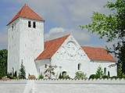

|
Architecture in Denmark The Astoft Collection of Buildings of Denmark The aim is to illustrate the architecture of the buildings using photographs supported by architectural descriptions. All photos are taken by the website owner, whilst the information provided by the annotations has been obtained from various sources in print and on the web. Two important sources are given at the bottom of this page. |
 |

|
|
||||
| Copenhagen | Building type | Dates | Style | |
| Amalienborg | Palaces | 1750s | Rococo | |
| Amaliegade 15-17 | Mansion | 1750s | Rococo | |
| Bagsv�rd | Church | 1976 | Modern (J�rn Utzon) | |
| Barchmanns Pal� | Mansion | 1740 | Baroque | |
| Bernstorffs Pal� | Mansion | 1750s | Rococo | |
| B�rsen | Exchange | 1623 | Renaissance | |
| Chancery Building | Government | 1721 | Baroque | |
| Charlottenborg | Mansion | 1670s | Baroque | |
| Charlottenlund | Mansion | 1733, 1881 | Baroque | |
| Christians Kirke | Church | 1755-69 | Rococo | |
| Christiansborg | Palace | 1907-16 | Neo-Baroque | |
| Christiansborg Chapel | Church | 1813-26 | Neoclassical | |
| Dehns Pal� | Mansion | 1750s | Rococo | |
| Diamanten | Library | 1999 | Modern | |
| Eremitagen | Hunting Lodge | 1736 | Late Baroque | |
| Frederiksberg Kirke | Church | 1734 | Baroque, Rococo | |
| Frederiksberg Palace | Palace | 1700-1730s | Baroque | |
| Frederiks Kirke | Church | 1749-70, 1875-94 | Baroque | |
| Grundtvigs Kirke | Church | 1921-40 | "Neo-Gothic Functionalism" | |
| Gule Pal� | Mansion | 1764 | Neoclassical | |
| Hellig�nds | Church | 1400s, 1630, 1878-81 | Gothic, Renaissance | |
| Holmens | Church | 1563, 1643, 1706, 1870s | Renaissance, Baroque | |
| Holsteins Pal� | Mansion | 1687, 1700s | Baroque | |
| Lindencrones Pal� | Mansion | 1753 | Late Baroque | |
| Lyngby | Church | 1150-1500 | Gothic | |
| Marskalsg�rden | Mansion | 1733 | Baroque | |
| Moltkes Pal� | Mansion | 1702 | Baroque | |
| Nikolaj | Church | 1582-91, 1909-17 | Renaissance | |
| Odd Fellow Pal�et | Mansion | 1750s | Rococo | |
| Opera House | Theatre | 2005 | Modern | |
| Palatial Mansions | Mansions | 1683-1764 | Baroque and Rococo | |
| Prinsens Pal� | Mansion | 1726, 1744 | Baroque, Rococo | |
| Regensen | Student hall | 1620s, 1731-49 | Renaissance | |
| St. Peter's | Church | 1450s, 1600s, 1700s | Gothic, Baroque | |
| Skuespilhuset | Theatre | 2008 | Modern | |
| Sophienholm | Mansion | 1805 | Classical | |
| St�rekassen | Theatre | 1931 | Art Deco | |
| Thotts Pal� | Mansion | 1680s, 1760s | Baroque | |
| Trinitatis | Church | 1637-56, 1730s | Renaissance, Baroque | |
| Vor Frelsers | Church | 1694, 1752 | Baroque | |
| Vor Frue | Cathedral | 1817-32 | Neoclassical | |
| �regaard | Mansion | 1806 | Neoclassical | |
| Sj�lland | ||||
| Borreby | Manor House | 1556 | Renaissance | |
| Bregentved | Manor House | 1736, 1891 | Baroque, neo-Rococo | |
| Bjernede | Church | 1100s | Romanesque | |
| Fredensborg | Palace | 1700s | Baroque | |
| Gisselfeld | Manor House | 1546-75 | "Gothic Renaissance" | |
| Gjorslev | Manor House | 1400-1843 | Gothic, Baroque | |
| Haraldsted | Church | 1100s, 1300s, 1400s | Romanesque, Gothic | |
| Holsteinborg | Manor House | 1598-1651, 1781 | Renaissance, Classical | |
| H�rsholm | Church | 1823 | Neoclassical | |
| Kalundborg | Church | C. 1200, 1400-1500s | Romanesque, Gothic | |
| Kirke S�by | Church | 1100, 1500 | Gothic | |
| Lerchenborg | Manor House | 1743 | Baroque/Rococo | |
| Nys� | Manor House | 1673 | Baroque | |
| Roskilde | Cathedral | 1170-1200s and later additions | Romanesque, Gothic | |
| Rye | Church | 1100s, 1658, 1700s | Romanesque, Gothic | |
| Skibby | Church | 1100-1150, 1500, 1860 | Romanesque, Gothic | |
| Sor� | Church | 1165-85 | Romanesque | |
| S�by | Church | 1824 restoration | Neo-Gothic and Neo-classical | |
| Vemmetofte | Manor House | 1600, 1715-24 | Renaissance, Baroque | |
| M�n | ||||
| Liselund | House | 1793 | Picturesque Neoclassical | |
| Fyn | ||||
| Asperup | Church | 1150-1200, 1400s | Romanesque, Gothic | |
| Egeskov | Manor House | 1554 | "Gothic Renaissance" | |
| Hesselagerg�rd | Manor House | 1538-50 | "Gothic renaissance" | |
| Lykkesholm | Manor House | 1600, 1780s | Renaissance, classical | |
| Nyborg | Castle | 1265, c.1550 | Medieval, Renaissance | |
| N�rre Lyndelse | Church | 1100s, 1500s | Gothic, Renaissance | |
| Svindinge | Church | 1570s | Renaissance | |
| S�nder N�r� | Church | 1200, 1500s | Romanesque, late Gothic | |
| T�singe | ||||
| Bregninge | Church | 1200, 1793, 1880s | Romanesque, Gothic | |
| Landet | Church | 1150, 1450, 1634 | Romanesque, Renaissance | |
| Valdemars Palace | Manor House | 1678, 1754, 1880 | Baroque, rococo, neo-gothic | |
Literature:
A good deal of the information on Danish buildings has been has been obtained from Niels Peter Stilling's excellent books on churches and manor houses entitled "Politikens bog om Danmarks kirker" (2000) and "Politikens bog om Danmarks slotte og herreg�rde" (2002) (Danish texts only). They carry much more information on the history of the buildings than has been given here.
An important source of information on the palatial mansions of Copenhagen is "50 pal�er og landsteder" by Sys Hartmann, 1990, Gyldendal. This has very extensive histories of each building and its owners.
Buildings of England
on Astoft